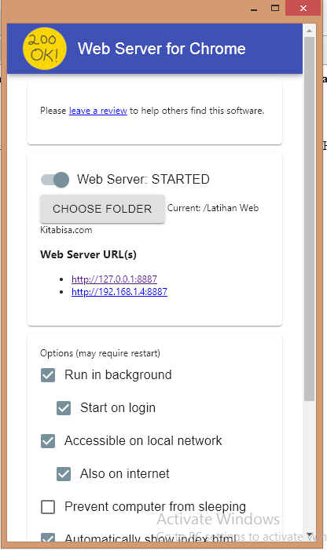
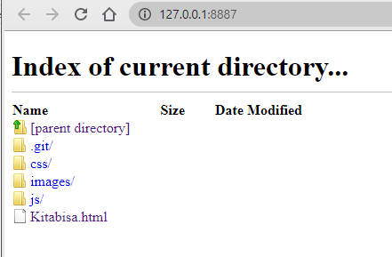

2. Chrome Web Server
Chrome Web Server adalah server web untuk chrome, yang berfungsi menyajikan/menampilkan halaman web dari folder lokal melalui jaringan,menggunakan HTTP.

Apabila kita klik web server url nya maka akan muncul tampilan seperti ini.ini adalah direktori file local kita.selanjutnya tinggal klik kitabisa.html
